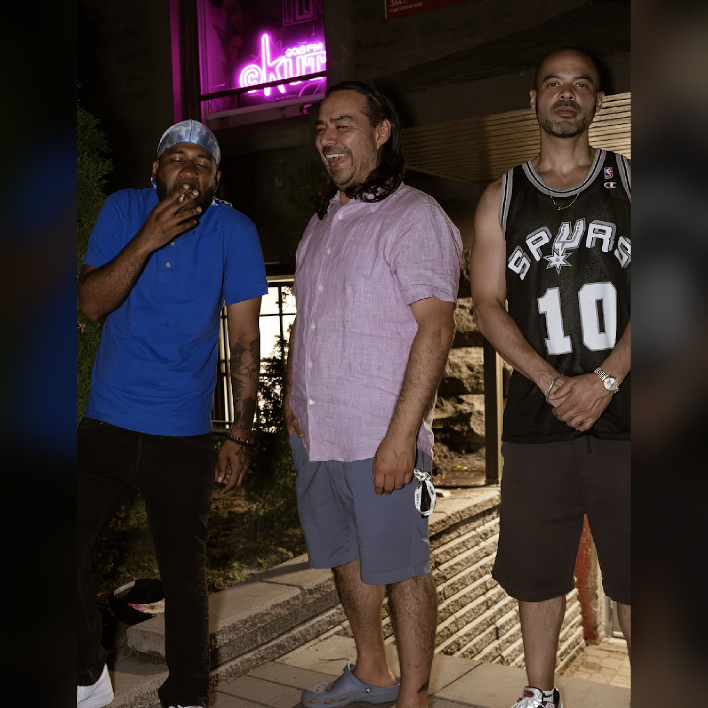

CKUT — Off The Hook feeds
CKUT's playlist page for Off The Hook has no working feed of its own, so these are scraped from ckut.ca/playlists/OH and published as static XML.
Playlists
One item per episode: date, link to the playlist page, and the full tracklist in the description.
Audio archives (podcast)
The same episodes plus an enclosure pointing at CKUT's own MP3. Nothing is rehosted here.